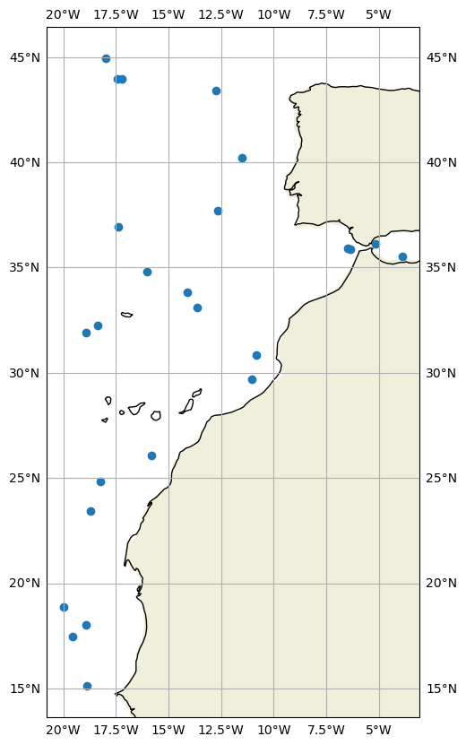
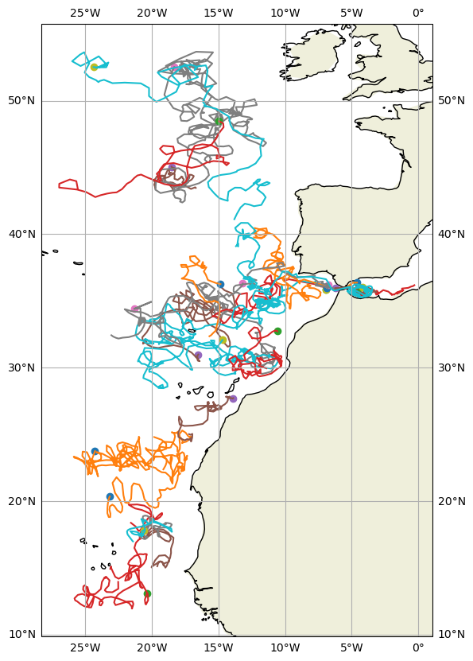

Argo floats in an area#
Let’s use, as an example, data in the *Atlantic for the 11th November 2020. It is pre-downloaded in the ./Data folder, but you can download it from the Coriolis GDAC See here for instructions on how to download the data
First, import the libraries
import numpy as np
import netCDF4
import xarray as xr
import cartopy.crs as ccrs
import cartopy
import matplotlib as mpl
import matplotlib.cm as cm
from matplotlib import pyplot as plt
%matplotlib inline
and it is possible to get the WMO of all the platforms that measured during this month, together with its data acquisition center. Hence, we can download the netCDF files for each cycle if necessary:
WMOs=np.array([])
DACs=np.array([])
LONs=np.array([])
LATs=np.array([])
for iday in range(1,31):
filein=f"./Data/202107-ArgoData/geo/atlantic_ocean/2020/11/202011{iday:02d}_prof.nc"
DS=xr.open_dataset(filein)
#look for the WMO and DAC for each float
LONs=np.append(LONs,DS.LONGITUDE.values)
LATs=np.append(LATs,DS.LATITUDE.values)
DACs=np.append(DACs,DS.DATA_CENTRE.astype(str).values)
WMOs=np.append(WMOs,DS.PLATFORM_NUMBER.astype(int).values)
#Keep just the unique set of WMOs
WMOs, indices = np.unique(WMOs, return_index=True)
DACs=DACs[indices]
LONs=LONs[indices]
LATs=LATs[indices]
print(f"During november 2020 {WMOs.shape[0]} Argo floats where active:")
for ip in range(0,WMOs.shape[0],500):
print(f"{ip} WMO {WMOs[ip]} DAC {DACs[ip]}")
During november 2020 1170 Argo floats where active:
0 WMO 1901341.0 DAC CS
500 WMO 4902441.0 DAC ME
1000 WMO 6903250.0 DAC IF
indice=np.where((LATs>15) & (LATs<45) & (LONs<0) & (LONs>-20))
WMOs_area=WMOs[indice]
DACs_area=DACs[indice]
fig,ax = plt.subplots(figsize=(15,10),subplot_kw={'projection': ccrs.PlateCarree()})
ax.plot(LONs[indice],LATs[indice],'o')
ax.coastlines()
ax.add_feature(cartopy.feature.LAND.with_scale('110m'))
ax.gridlines(draw_labels=True, x_inline=False, y_inline=False);
ax.grid()

DACs_area=np.char.replace(np.char.replace(np.char.replace(np.char.replace(np.char.replace(np.char.replace(np.char.replace(np.char.replace(np.char.replace(np.char.replace(np.char.replace(DACs_area,
'IF','coriolis'),'BO','bodc'),'AO','aoml'),
'HZ','csio'),'CS','csiro'),'IN','incois'),'JA','jma'),'KM','kma'),
'KO','kordi'),'ME','meds'),'NM','nmdis')
fig,ax = plt.subplots(figsize=(15,10),subplot_kw={'projection': ccrs.PlateCarree()})
for ip in range(0,WMOs_area.size):
filein=f"./Data/202107-ArgoData/dac/{DACs_area[ip]}/{WMOs_area[ip]:7.0f}/{WMOs_area[ip]:7.0f}_prof.nc"
DS=xr.open_dataset(filein)
ax.plot(DS.LONGITUDE[0],DS.LATITUDE[0],'o',DS.LONGITUDE,DS.LATITUDE,'-')
ax.coastlines()
ax.add_feature(cartopy.feature.LAND.with_scale('110m'))
ax.gridlines(draw_labels=True, x_inline=False, y_inline=False);
ax.grid()

DS.LONGITUDE
<xarray.DataArray 'LONGITUDE' (N_PROF: 129)> Size: 1kB
[129 values with dtype=float64]
Dimensions without coordinates: N_PROF
Attributes:
long_name: Longitude of the station, best estimate
standard_name: longitude
units: degree_east
valid_min: -180.0
valid_max: 180.0
axis: X